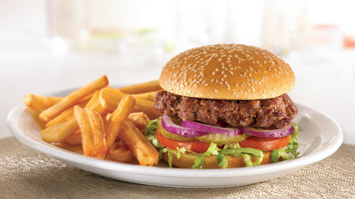

Classic Burger

Ingredients
- 1 pond ground lean (7% fat)beef
- 1 large egg
- 1/2 cup winced onion
- 1/4 cup fine dried bread crumbs
- 1 tps warces tershire
- 1 or 2 cloves garlic,peeled and minced
- About 1/2 tps salt
- About 1/4 tsp pepper
- 4 humburger buns
- About 1/4 cup mayuonnaise
- About 1/4 cup ketchup
- 1 ice berg lettuce leaves,rinsed and cripsed
- 1 firm-ripe tomato,cored and thinly sliced
- 4 thin slices red onion
How to make It
Step 1
- In bowl mix ground beef,egg.onion,bread crumbs,worcestershire,garlic,1/2 tsp salt,and 1/4tsp pepper
until
well blended.Divide mixture into four equal portions and shape each into a patty about 4
inches wide
Step 2
- Lay burgers on an oiled barbecue grill over a solid bed of hot coals or high heat on a gas grill(you can
hold your
hand at grill level only 2 or 3 seconds)close lid on gas grill.Cook burgers,turning
once,until browned on both sides
and no longer pink inside(cut to test).7 to 8 min total.Remove
from grill
Step 3
- Lay buns,cut side down.On grill and cook until lightly toasted,30 sec to 1 min
Step 4
- Spread mayonnaise and ketchup on bun bottoms.Add lettuces,tomato.burger,onion,and salt and pepper to
taste.Set bun tops in place.